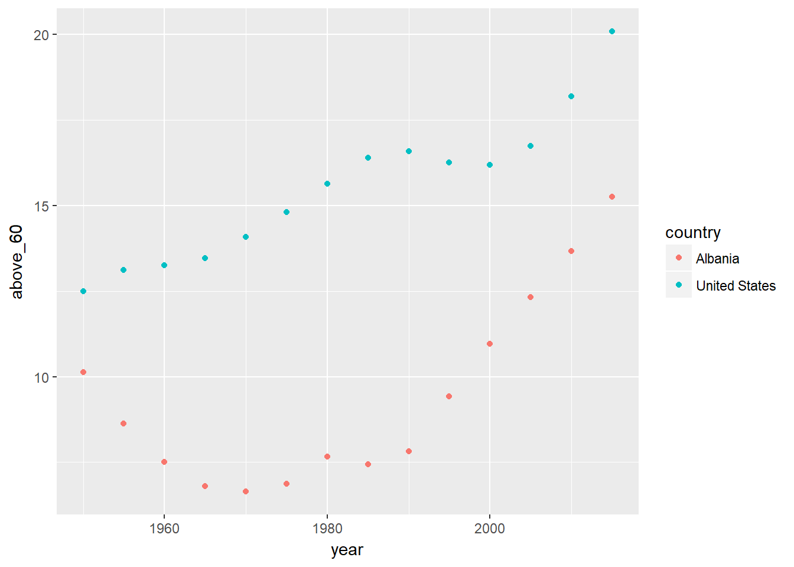
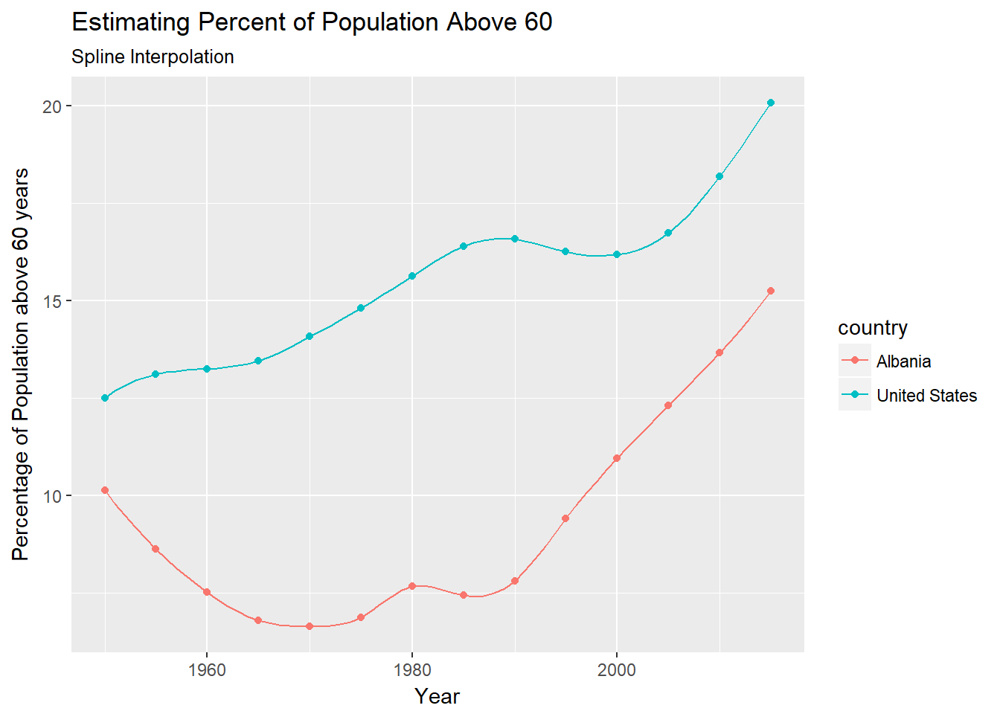
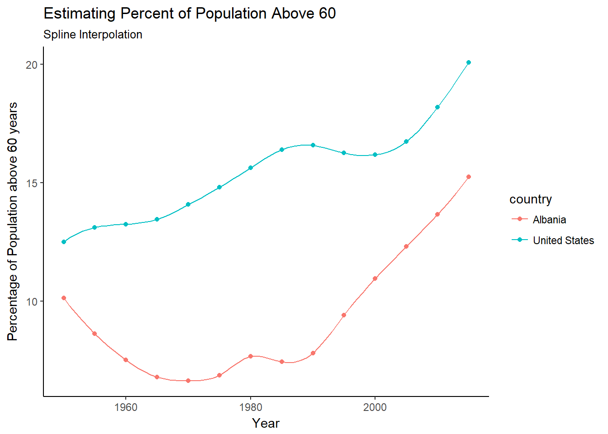

2.3 Data Collection
The data for this lesson comes from the Gapminder website. Again, you could just start with the tools application on the website instead of using the R code here. This section will be long but remember that data wrangling can take up to 80% of the time in a project. We also provide the final data in a csv file on the github site for this book. The file name is Gapminder_final.csv.
2.3.1 Load Packages
First we will load the packages we need for this chapter. The list below are the packages we will be using:
library(readxl)
library(gapminder)
library(tidyverse)
library(GGally)
library(plotly)
library(crosstalk)
library(ggthemes)
library(geofacet)
library(DT)
library(d3scatter)
library(rbokeh)
library(trelliscopejs)First data is downloaded in a Excel spreadsheet from the Gapminder website. We will use the package readxl to read it into R. In addition, R has a package called gapminder which is a subset of the data from the Gapminder website. We will use it to get country names to reduce the size of our data and exclude countries with a large amount of missing data.
If you want to skip the data collection and cleaning steps, data has been downloaded and is in the data folder on the GitHub site for this book.
2.3.2 Population
The first data set we will be working with is the population for each country.
2.3.2.1 Import Data
First import the data.
gapminder_population_temp <- read_excel("data/indicator gapminder population.xlsx")Look at the first few rows of the data to get a feel for the data.
| Total population | 1800.0 | 1810.0 | 1820.0 | 1830.0 | 1840.0 | 1850.0 | 1860.0 | 1870.0 | 1880.0 | 1890.0 | 1900.0 | 1910.0 | 1920.0 | 1930.0 | 1940.0 | 1950.0 | 1951.0 | 1952.0 | 1953.0 | 1954.0 | 1955.0 | 1956.0 | 1957.0 | 1958.0 | 1959.0 | 1960.0 | 1961.0 | 1962.0 | 1963.0 | 1964.0 | 1965.0 | 1966.0 | 1967.0 | 1968.0 | 1969.0 | 1970.0 | 1971.0 | 1972.0 | 1973.0 | 1974.0 | 1975.0 | 1976.0 | 1977.0 | 1978.0 | 1979.0 | 1980.0 | 1981.0 | 1982.0 | 1983.0 | 1984.0 | 1985.0 | 1986.0 | 1987.0 | 1988.0 | 1989.0 | 1990.0 | 1991.0 | 1992.0 | 1993.0 | 1994.0 | 1995.0 | 1996.0 | 1997.0 | 1998.0 | 1999.0 | 2000.0 | 2001.0 | 2002.0 | 2003.0 | 2004.0 | 2005.0 | 2006.0 | 2007.0 | 2008.0 | 2009.0 | 2010.0 | 2011.0 | 2012.0 | 2013.0 | 2014.0 | 2015.0 |
|---|---|---|---|---|---|---|---|---|---|---|---|---|---|---|---|---|---|---|---|---|---|---|---|---|---|---|---|---|---|---|---|---|---|---|---|---|---|---|---|---|---|---|---|---|---|---|---|---|---|---|---|---|---|---|---|---|---|---|---|---|---|---|---|---|---|---|---|---|---|---|---|---|---|---|---|---|---|---|---|---|---|
| Abkhazia | NA | NA | NA | NA | NA | NA | NA | NA | NA | NA | NA | NA | NA | NA | NA | NA | NA | NA | NA | NA | NA | NA | NA | NA | NA | NA | NA | NA | NA | NA | NA | NA | NA | NA | NA | NA | NA | NA | NA | NA | NA | NA | NA | NA | NA | NA | NA | NA | NA | NA | NA | NA | NA | NA | NA | NA | NA | NA | NA | NA | NA | NA | NA | NA | NA | NA | NA | NA | NA | NA | NA | NA | NA | NA | NA | NA | NA | NA | NA | NA | NA |
| Afghanistan | 3280000 | 3280000 | 3323519 | 3448982 | 3625022 | 3810047 | 3973968 | 4169690 | 4419695 | 4710171 | 5021241 | 5351413 | 5813814 | 6394908 | 7034081 | 7752118 | 7839426 | 7934798 | 8038312 | 8150037 | 8270024 | 8398309 | 8534913 | 8679848 | 8833127 | 8994793 | 9164945 | 9343772 | 9531555 | 9728645 | 9935358 | 10148841 | 10368600 | 10599790 | 10849510 | 11121097 | 11412821 | 11716896 | 12022514 | 12315553 | 12582954 | 12831361 | 13056499 | 13222547 | 13283279 | 13211412 | 12996923 | 12667001 | 12279095 | 11912510 | 11630498 | 11438949 | 11337932 | 11375768 | 11608351 | 12067570 | 12789374 | 13745630 | 14824371 | 15869967 | 16772522 | 17481800 | 18034130 | 18511480 | 19038420 | 19701940 | 20531160 | 21487079 | 22507368 | 23499850 | 24399948 | 25183615 | 25877544 | 26528741 | 27207291 | 27962207 | 28809167 | 29726803 | 30682500 | 31627506 | 32526562 |
| Akrotiri and Dhekelia | NA | NA | NA | NA | NA | NA | NA | NA | NA | NA | NA | NA | NA | NA | NA | 10661 | 10737 | 10813 | 10889 | 10966 | 11043 | 11121 | 11200 | 11279 | 11358 | 11439 | 11519 | 11601 | 11683 | 11765 | 11848 | 11932 | 12016 | 12101 | 12187 | 12273 | 12359 | 12447 | 12535 | 12623 | 12712 | 12802 | 12892 | 12983 | 13075 | 13167 | 13260 | 13354 | 13448 | 13543 | 13639 | 13735 | 13832 | 13930 | 14028 | 14127 | 14227 | 14328 | 14429 | 14531 | 14633 | 14737 | 14841 | 14946 | 15051 | 15157 | 15264 | 15372 | 15481 | 15590 | 15700 | 15700 | 15700 | 15700 | NA | NA | NA | NA | NA | NA | NA |
| Albania | 410445 | 423591 | 438671 | 457234 | 478227 | 506889 | 552800 | 610036 | 672544 | 741688 | 819950 | 901122 | 963956 | 1015991 | 1123210 | 1263171 | 1287499 | 1316086 | 1348097 | 1382881 | 1419969 | 1459089 | 1500152 | 1543224 | 1588478 | 1636054 | 1685901 | 1737645 | 1790533 | 1843596 | 1896125 | 1947786 | 1998695 | 2049147 | 2099657 | 2150602 | 2202040 | 2253842 | 2305999 | 2358467 | 2411229 | 2464338 | 2517869 | 2571845 | 2626290 | 2681245 | 2735329 | 2788315 | 2842620 | 2901590 | 2966799 | 3041003 | 3121336 | 3197064 | 3253659 | 3281453 | 3275438 | 3240613 | 3189623 | 3140634 | 3106727 | 3092034 | 3092471 | 3102898 | 3114851 | 3121965 | 3124093 | 3123112 | 3117045 | 3103758 | 3082172 | 3050741 | 3010849 | 2968026 | 2929886 | 2901883 | 2886010 | 2880667 | 2883281 | 2889676 | 2896679 |
| Algeria | 2503218 | 2595056 | 2713079 | 2880355 | 3082721 | 3299305 | 3536468 | 3811028 | 4143163 | 4525691 | 4946166 | 5404045 | 6063800 | 6876190 | 7797418 | 8872247 | 9039913 | 9216395 | 9405445 | 9609507 | 9829717 | 10065829 | 10316288 | 10578453 | 10848971 | 11124892 | 11404859 | 11690152 | 11985130 | 12295973 | 12626953 | 12980269 | 13354197 | 13744383 | 14144437 | 14550033 | 14960111 | 15377095 | 15804428 | 16247113 | 16709098 | 17190236 | 17690184 | 18212331 | 18760761 | 19337723 | 19943667 | 20575701 | 21228288 | 21893857 | 22565908 | 23241276 | 23917889 | 24591493 | 25257671 | 25912364 | 26554277 | 27180921 | 27785977 | 28362015 | 28904300 | 29411839 | 29887717 | 30336880 | 30766551 | 31183658 | 31590320 | 31990387 | 32394886 | 32817225 | 33267887 | 33749328 | 34261971 | 34811059 | 35401790 | 36036159 | 36717132 | 37439427 | 38186135 | 38934334 | 39666519 |
| American Samoa | 8170 | 8156 | 8142 | 8128 | 8114 | 7958 | 7564 | 7057 | 6582 | 6139 | 5949 | 7047 | 8173 | 10081 | 13135 | 18937 | 19295 | 19543 | 19683 | 19729 | 19706 | 19647 | 19597 | 19606 | 19729 | 20012 | 20478 | 21118 | 21883 | 22701 | 23518 | 24320 | 25116 | 25886 | 26615 | 27292 | 27916 | 28490 | 29014 | 29491 | 29932 | 30325 | 30690 | 31105 | 31670 | 32456 | 33488 | 34740 | 36165 | 37687 | 39247 | 40835 | 42448 | 44049 | 45591 | 47044 | 48379 | 49597 | 50725 | 51807 | 52874 | 53926 | 54942 | 55899 | 56768 | 57522 | 58176 | 58729 | 59117 | 59262 | 59117 | 58648 | 57904 | 57031 | 56226 | 55636 | 55316 | 55227 | 55302 | 55434 | 55538 |
From the gapminder package, obtain the subset of countries where the data is most complete.
countries<-levels(gapminder$country)Finally, wrangle the data into the final form needed. The term used is tidy data; each row is an observation and each column a variable. As currently imported, the data is in a wide format where the value of years, which is a single variable, are used as column titles. Switch to a long format.
gapminder_population<-gapminder_population_temp %>%
gather(year,pop,-"Total population") %>%
rename(country="Total population") %>%
mutate(year=as.integer(year),pop=as.integer(pop)) %>%
filter(country %in% countries,year>=1950)Table 2.1 is the first 6 rows of our data.
| country | year | pop |
|---|---|---|
| Afghanistan | 1950 | 7752118 |
| Albania | 1950 | 1263171 |
| Algeria | 1950 | 8872247 |
| Angola | 1950 | 4354882 |
| Argentina | 1950 | 17150335 |
| Australia | 1950 | 8177344 |
2.3.2.2 Quality Check
Before proceeding, check the condition of the data and clean up any obvious issues. First compare the number of countries in our data with those in the gapminder package.
length(countries)## [1] 142length(unique(gapminder_population$country))## [1] 139There are 142 countries in the gapminder data but only 139 in the data we collected that match those 142 countries. There might some names in gapminder that are different from the imported data. Check this idea first.
countries[!(countries %in% unique(gapminder_population$country))]## [1] "Korea, Dem. Rep." "Korea, Rep." "Yemen, Rep."We are missing the two Koreas and Yemen from our data.
We need the full list of countries in the original data to change the names.
gapminder_population<-gapminder_population_temp %>%
gather(year,pop,-"Total population") %>%
rename(country="Total population") %>%
mutate(year=as.integer(year),pop=as.integer(pop)) %>%
filter(year>=1950)unique(gapminder_population$country)[grep("Korea",unique(gapminder_population$country))]## [1] "North Korea" "South Korea" "United Korea (former)"unique(gapminder_population$country)[grep("Yemen",unique(gapminder_population$country))]## [1] "North Yemen (former)" "South Yemen (former)" "Yemen"We now know the problem is that in the gapminder package we have the titles:
“Korea, Dem. Rep.”
“Korea, Rep.”
“Yemen, Rep.”
while in our data from the gapminder website we have the names:
“North Korea”
“South Korea”
“Yemen”
Correct the names in the our data.
gapminder_population$country<-gsub("North Korea","Korea, Dem. Rep.",gapminder_population$country)
gapminder_population$country<-gsub("South Korea","Korea, Rep.",gapminder_population$country)
gapminder_population$country<-gsub("Yemen","Yemen, Rep.",gapminder_population$country)Now check our data again.
sum(!(countries %in% unique(gapminder_population$country)))## [1] 0Finally get rid of the countries not in the gapminder package.
gapminder_population<-gapminder_population %>%
filter(country %in% countries)Next look for missing observations.
gapminder_population[is.na(gapminder_population$pop),]## # A tibble: 2 x 3
## country year pop
## <chr> <int> <int>
## 1 Taiwan 2014 NA
## 2 Taiwan 2015 NAWe are missing the last two years of data for Taiwan. We could drop Taiwan or get another estimate of the population from the web. Using the website http://www.worldometers.info/world-population/taiwan-population/ we see that for the last four years the population has grown by about 70000 each year. We will estimate the population for 2014 and 2015 by adding 70000 to the population in 2013 for each year..
gapminder_population[is.na(gapminder_population$pop),][1,3]=23151000 + 70000
gapminder_population[is.na(gapminder_population$pop),][1,3]=23151000 + 1400002.3.2.3 Getting Data into Final Form
Now add the continents names to the data frame. First get the country names and associated continent names from the gapminder package.
dict<-gapminder %>% group_by(continent) %>% distinct(country) %>%
mutate(country=as.character(country))Add the continent names using a join function.
gapminder_population <- gapminder_population %>%
left_join(dict,by="country") %>%
select(country,continent,year,pop)Table 2.2 shows the form of the final data set.
| country | continent | year | pop |
|---|---|---|---|
| Afghanistan | Asia | 1950 | 7752118 |
| Albania | Europe | 1950 | 1263171 |
| Algeria | Africa | 1950 | 8872247 |
| Angola | Africa | 1950 | 4354882 |
| Argentina | Americas | 1950 | 17150335 |
| Australia | Oceania | 1950 | 8177344 |
To conclude, clean up the workspace by removing temporary objects.
rm(gapminder_population_temp)2.3.2.4 Discussion Ideas
Even though the video we watched used population, what are the disadvantages of using raw population?
A large country will have a larger population because of size, what is another population metric that places the data on an equal scale?
2.3.3 Population Density
Adjusting population by the size of the country gives a better basis to compare countries. The gapminder website has a data set on population density, the population divided by the area of the country in squared kilometers, but it only goes to the year 2010. The gapminder website also has a data file with the area of each country. It also only goes up to 2010. To find population density, we will import the surface area file and divide population by the surface area. This file only goes up to 2010 so we will have to assume that the area does not change in the last five years.
gapminder_area <- read_excel("data/surface land.xlsx")gapminder_area <- gapminder_area %>%
gather(year,area,-"Surface area (sq. km)") %>%
rename(country="Surface area (sq. km)") %>%
mutate(year=as.integer(year)) %>%
filter(year > 1960,year<2011)Next check the country names.
countries[!(countries %in% unique(gapminder_area$country))]## [1] "Central African Republic" "Czech Republic"
## [3] "Dominican Republic" "Reunion"
## [5] "Taiwan"unique(gapminder_area$country)[grep("Czech",unique(gapminder_area$country))]## [1] "Czech Rep."unique(gapminder_area$country)[grep("Dominican",unique(gapminder_area$country))]## [1] "Dominican Rep."unique(gapminder_area$country)[grep("Central",unique(gapminder_area$country))]## [1] "Central African Rep."unique(gapminder_area$country)[grep("Reunion",unique(gapminder_area$country))]## character(0)unique(gapminder_area$country)[grep("Taiwan",unique(gapminder_area$country))]## character(0)We are missing Taiwan and Reunion from the data and for the other three mismatches we have Republic named as Rep.
gapminder_area$country<-gsub("Czech Rep.","Czech Republic",gapminder_area$country)
gapminder_area$country<-gsub("Central African Rep.","Central African Republic",gapminder_area$country)
gapminder_area$country<-gsub("Dominican Rep.","Dominican Republic",gapminder_area$country)We will have to add Taiwan and Reunion after we complete the data consolidation.
gapminder_area<-gapminder_area %>%
filter(country %in% countries)gapminder_area %>% filter(is.na(area)) %>% select(country) %>% unique()## # A tibble: 1 x 1
## country
## <chr>
## 1 BelgiumBelgium is missing data, so we will just fill just fill in the values with the value of 30530.
gapminder_area %>% filter(country=="Belgium") %>% filter(!is.na(area))## # A tibble: 11 x 3
## country year area
## <chr> <int> <dbl>
## 1 Belgium 2000 30530
## 2 Belgium 2001 30530
## 3 Belgium 2002 30530
## 4 Belgium 2003 30530
## 5 Belgium 2004 30530
## 6 Belgium 2005 30530
## 7 Belgium 2006 30530
## 8 Belgium 2007 30530
## 9 Belgium 2008 30530
## 10 Belgium 2009 30530
## 11 Belgium 2010 30530gapminder_area <- gapminder_area %>% replace_na(list(area=30530))Now merge the data with the population data and fill in the missing values.
gapminder_popdensity <- gapminder_population %>%
left_join(gapminder_area,by=c("country","year"))Fill in data for Taiwan and Reunion. Taiwan is missing its density. The area of Taiwan is 36,000 squared kilometers and the area of Reunion is 2510, .
gapminder_popdensity[gapminder_popdensity$country=="Reunion","area"] = 2510
gapminder_popdensity[gapminder_popdensity$country=="Taiwan","area"] = 36000Fill in the years prior to 1961 with the values from 1961.
gapminder_popdensity<- gapminder_popdensity %>%
group_by(country) %>%
fill(area,.direction="up") %>%
ungroup() %>%
arrange(year,country)Fill in the missing value in the tail with the most recent values.
gapminder_popdensity<- gapminder_popdensity %>%
group_by(country) %>%
fill(area,.direction="down") %>%
ungroup() %>%
arrange(year,country)Calculate density by dividing population by area.
gapminder_popdensity <- gapminder_popdensity %>%
mutate(density=pop/area) %>%
select(-area)Clean up the work space.
rm(gapminder_area)
rm(gapminder_population)2.3.4 Life Expectancy
Next bring in life expectancy data. Since the data source is the same as population we will have the same issue with the names of the Koreas and Yemen. We will be performing the same steps as section 2.3.2, so the narrative on many of the steps is skipped.
gapminder_lifeexp_temp <- read_excel("data/indicator life_expectancy_at_birth.xlsx")gapminder_lifeexp<-gapminder_lifeexp_temp %>%
gather(year,life_exp,-"Life expectancy") %>%
rename(country="Life expectancy") %>%
mutate(year=as.integer(year)) %>%
filter(year>=1950)
rm(gapminder_lifeexp_temp)gapminder_lifeexp$country<-gsub("North Korea","Korea, Dem. Rep.",gapminder_lifeexp$country)
gapminder_lifeexp$country<-gsub("South Korea","Korea, Rep.",gapminder_lifeexp$country)
gapminder_lifeexp$country<-gsub("Yemen","Yemen, Rep.",gapminder_lifeexp$country)gapminder_lifeexp<-gapminder_lifeexp %>%
filter(country %in% countries)sum(is.na(gapminder_lifeexp))## [1] 0gapminder_lifeexp <- gapminder_lifeexp %>%
left_join(dict,by="country") %>%
select(country,continent,year,life_exp)Again 2.3 shows the final data set.
| country | continent | year | life_exp |
|---|---|---|---|
| Afghanistan | Asia | 1950 | 26.85 |
| Albania | Europe | 1950 | 54.48 |
| Algeria | Africa | 1950 | 42.77 |
| Angola | Africa | 1950 | 30.70 |
| Argentina | Americas | 1950 | 61.61 |
| Australia | Oceania | 1950 | 69.01 |
2.3.5 Fertility Rates
Next fertility rates of a country may be an indication of its developmental state. Get the data.
gapminder_fertility_temp <- read_excel("data/indicator undata total_fertility.xlsx")gapminder_fertility<-gapminder_fertility_temp %>%
gather(year,fertility,-"Total fertility rate") %>%
rename(country="Total fertility rate") %>%
mutate(year=as.integer(year)) %>%
filter(year>=1950)
rm(gapminder_fertility_temp)gapminder_fertility$country<-gsub("North Korea","Korea, Dem. Rep.",gapminder_fertility$country)
gapminder_fertility$country<-gsub("South Korea","Korea, Rep.",gapminder_fertility$country)
gapminder_fertility$country<-gsub("Yemen","Yemen, Rep.",gapminder_fertility$country)gapminder_fertility<-gapminder_fertility %>%
filter(country %in% countries)length(unique(gapminder_fertility$country))## [1] 142sum(is.na(gapminder_fertility$fertility))## [1] 2gapminder_fertility[is.na(gapminder_fertility$fertility),]## # A tibble: 2 x 3
## country year fertility
## <chr> <int> <dbl>
## 1 Taiwan 2014 NA
## 2 Taiwan 2015 NATaiwan again has missing values. Estimate the fertility with average of the previous 5 years.
temp<-as.double(gapminder_fertility %>%
filter(country=="Taiwan",year<2014 & year>2008) %>%
summarise(ave=mean(fertility)))
gapminder_fertility<-gapminder_fertility %>% replace_na(list(fertility=temp))
rm(temp)gapminder_fertility <- gapminder_fertility %>%
left_join(dict,by="country") %>%
select(country,continent,year,fertility)Table 2.4 is the final form of the fertility data.
| country | continent | year | fertility |
|---|---|---|---|
| Afghanistan | Asia | 1950 | 7.67 |
| Albania | Europe | 1950 | 5.80 |
| Algeria | Africa | 1950 | 7.65 |
| Angola | Africa | 1950 | 6.93 |
| Argentina | Americas | 1950 | 3.16 |
| Australia | Oceania | 1950 | 3.07 |
2.3.6 Child Mortality
Next collect data on child mortality. This data is the number of children out of 1000 born in the given year that will die before reaching the age of 5.
gapminder_mortality5_temp <- read_excel("data/indicator gapminder under5mortality.xlsx")gapminder_mortality5<-gapminder_mortality5_temp %>%
gather(year,mortality,-"Under five mortality") %>%
rename(country="Under five mortality") %>%
mutate(year=as.integer(year)) %>%
filter(year>=1950)
rm(gapminder_mortality5_temp)gapminder_mortality5$country<-gsub("North Korea","Korea, Dem. Rep.",gapminder_mortality5$country)
gapminder_mortality5$country<-gsub("South Korea","Korea, Rep.",gapminder_mortality5$country)
gapminder_mortality5$country<-gsub("Yemen","Yemen, Rep.",gapminder_mortality5$country)gapminder_mortality5<-gapminder_mortality5 %>%
filter(country %in% countries)sum(is.na(gapminder_mortality5$mortality))## [1] 156gapminder_mortality5[is.na(gapminder_mortality5$mortality),]## # A tibble: 156 x 3
## country year mortality
## <chr> <int> <dbl>
## 1 Hong Kong, China 1950 NA
## 2 Puerto Rico 1950 NA
## 3 Reunion 1950 NA
## 4 Taiwan 1950 NA
## 5 Hong Kong, China 1951 NA
## 6 Puerto Rico 1951 NA
## 7 Reunion 1951 NA
## 8 Taiwan 1951 NA
## 9 Hong Kong, China 1952 NA
## 10 Puerto Rico 1952 NA
## # ... with 146 more rowsNow Hong Kong, Puerto Rico, and Reunion are missing data up through the year 1979 and Taiwan is missing all years. We could drop Taiwan from the data but at this point that is a waste of information from the other data sets. We could impute the values but we need to be careful when we interpret the resulting plots. The first three countries mentioned are going to pose problems for the years prior to 1980. For ease will will drop these countries from the analysis after we get our final data set.
gapminder_mortality5 <- gapminder_mortality5 %>%
left_join(dict,by="country") %>%
select(country,continent,year,mortality)The final data for child mortality is in Table 2.5
| country | continent | year | mortality |
|---|---|---|---|
| Afghanistan | Asia | 1950 | 439.56 |
| Albania | Europe | 1950 | 165.17 |
| Algeria | Africa | 1950 | 292.13 |
| Angola | Africa | 1950 | 404.92 |
| Argentina | Americas | 1950 | 93.53 |
| Australia | Oceania | 1950 | 31.60 |
2.3.7 Aging Population
Another idea is that developed countries have an older population by percentage. Collect data on the percent of population above 60 years in age.
gapminder_above60_temp <- read_excel("data/indicator_total above 60 percen.xlsx")gapminder_above60<-gapminder_above60_temp %>%
gather(year,above_60,-"Total above 60 (%)") %>%
rename(country="Total above 60 (%)") %>%
mutate(year=as.integer(year)) %>%
filter(year>=1950)
rm(gapminder_above60_temp)This data came from a different source, so be careful about the country names.
countries[!countries %in% unique(gapminder_above60$country)]## [1] "Central African Republic" "Czech Republic"
## [3] "Dominican Republic" "Taiwan"Taiwan is still a problem but now there are three other countries that are in the gapminder package and not in the new data set. This is a problem with naming similar to what we found when finding density. Correct those first three countries.
unique(gapminder_above60$country)[grep("Czech",unique(gapminder_above60$country))]## [1] "Czech Rep."unique(gapminder_above60$country)[grep("Dominican",unique(gapminder_above60$country))]## [1] "Dominican Rep."unique(gapminder_above60$country)[grep("Central",unique(gapminder_above60$country))]## [1] "Central African Rep."gapminder_above60$country<-gsub("Czech Rep.","Czech Republic",gapminder_above60$country)
gapminder_above60$country<-gsub("Central African Rep.","Central African Republic",gapminder_above60$country)
gapminder_above60$country<-gsub("Dominican Rep.","Dominican Republic",gapminder_above60$country)Remove Taiwan since we have no data on it. While at it, remove Hong Kong, Puerto Rico, and Reunion. We could drop all data prior to 1980 but this is 30 years of data. Instead, we chose to drop these four small countries.
final_countries<- countries[!countries %in%
unique(gapminder_mortality5[is.na(gapminder_mortality5$mortality),]$country)]Remove the four countries.
gapminder_above60<-gapminder_above60 %>%
filter(country %in% final_countries)sum(is.na(gapminder_above60$above_60))## [1] 0There are no missing values.
The data is only for every 5 years and has projections past 2015. We will remove the projections and then interpolate for the remaining years.
unique(gapminder_above60$year)## [1] 1950 1955 1960 1965 1970 1975 1980 1985 1990 1995 2000 2005 2010 2015
## [15] 2020 2025 2030 2035 2040 2045 2050First remove the projections.
gapminder_above60 <- gapminder_above60 %>% filter(year <= 2015)Before interpolating, plot two countries to get an idea of the data.
p<-gapminder_above60 %>% filter(country=="Albania" | country=="United States") %>%
ggplot(aes(x=year,y=above_60,color=country))+
geom_point()
p
We will be using a spline to interpolate, but first plot a linear interpolation to compare with the spline.
temp1<-data.frame(with(gapminder_above60 %>%
filter(country=="Albania"),approx(year,above_60,xout=seq(1950,2015)))) %>%
mutate(country="Albania")
temp2<-data.frame(with(gapminder_above60 %>%
filter(country=="United States"),approx(year,above_60,xout=seq(1950,2015)))) %>%
mutate(country="United States")p+
geom_line(data=temp1,mapping=aes(x=x,y=y)) +
geom_line(data=temp2,mapping=aes(x=x,y=y)) +
labs(x="Year",y="Percentage of Population above 60 years",title="Estimating Percent of Population Above 60",subtitle="Linear Interpolation")Now use a spline. This process fits a cubic spline between each point and will be smoother than the linear interpolation.
temp1<-data.frame(with(gapminder_above60 %>%
filter(country=="Albania"),spline(year,above_60,xout=seq(1950,2015)))) %>%
mutate(country="Albania")
temp2<-data.frame(with(gapminder_above60 %>%
filter(country=="United States"),spline(year,above_60,xout=seq(1950,2015)))) %>%
mutate(country="United States")p+
geom_line(data=temp1,mapping=aes(x=x,y=y)) +
geom_line(data=temp2,mapping=aes(x=x,y=y)) +
labs(x="Year",y="Percentage of Population above 60 years",title="Estimating Percent of Population Above 60",subtitle="Spline Interpolation")
Clean the work space.
rm(temp1)
rm(temp2)To aviod the temporary variables, use the code below in one step.
p+ data.frame(with(gapminder_above60 %>%
filter(country=="Albania"),spline(year,above_60,xout=seq(1950,2015)))) %>%
mutate(country="Albania") %>%
geom_line(mapping=aes(x=x,y=y)) +
data.frame(with(gapminder_above60 %>%
filter(country=="United States"),spline(year,above_60,xout=seq(1950,2015)))) %>%
mutate(country="United States") %>%
geom_line(mapping=aes(x=x,y=y)) +
labs(x="Year",y="Percentage of Population above 60 years",
title="Estimating Percent of Population Above 60",subtitle="Spline Interpolation")Interpolate for every country and create our final data frame. Use the map function from the purrr package.
gapminder_above60<-gapminder_above60 %>%
split(.$country) %>%
map(~data.frame(spline(.$year,.$above_60,xout=seq(1950,2015)))) %>%
map2_df(final_countries,~update_list(.x,country=.y)) %>%
mutate(year=as.integer(x),above_60=y) %>%
select(country,year,above_60) %>% as.tibble()Finish by adding the continents.
gapminder_above60 <- gapminder_above60 %>%
left_join(dict,by="country") %>%
select(country,continent,year,above_60) %>%
arrange(year,country)The first few rows of the final data frame:
gapminder_above60 %>% head() %>% knitr::kable()| country | continent | year | above_60 |
|---|---|---|---|
| Afghanistan | Asia | 1950 | 4.503620 |
| Albania | Europe | 1950 | 10.131796 |
| Algeria | Africa | 1950 | 6.808316 |
| Angola | Africa | 1950 | 4.944525 |
| Argentina | Americas | 1950 | 7.043321 |
| Australia | Oceania | 1950 | 12.458937 |
Finally, clean up the figure by removing the background shading.
p+
geom_line(data=gapminder_above60%>%filter(country=="Albania"),mapping=aes(x=year,y=above_60)) +
geom_line(data=gapminder_above60%>%filter(country=="United States"),mapping=aes(x=year,y=above_60)) +
labs(x="Year",y="Percentage of Population above 60 years",title="Estimating Percent of Population Above 60",subtitle="Spline Interpolation") +theme_classic()
2.3.8 Final Data
First do a quick quality check.
table(gapminder_popdensity$continent)/66##
## Africa Americas Asia Europe Oceania
## 52 25 33 30 2table(gapminder_lifeexp$continent)/67##
## Africa Americas Asia Europe Oceania
## 52 25 33 30 2table(gapminder_fertility$continent)/66##
## Africa Americas Asia Europe Oceania
## 52 25 33 30 2table(gapminder_mortality5$continent)/66##
## Africa Americas Asia Europe Oceania
## 52 25 33 30 2table(gapminder_above60$continent)/66##
## Africa Americas Asia Europe Oceania
## 51 24 31 30 2table(dict$continent)##
## Africa Americas Asia Europe Oceania
## 52 25 33 30 2We have two problems left, the percentage of the population above 60 has less countries than the other data sets and life expectancy has one more year, 2016, than the other data sets. Resolve these problems by dropping the 4 countries and the year 2016.
gapminder_popdensity %>% summarise(Total=n_distinct(country))## # A tibble: 1 x 1
## Total
## <int>
## 1 142gapminder_above60 %>% summarise(Total=n_distinct(country))## # A tibble: 1 x 1
## Total
## <int>
## 1 138unique(gapminder_popdensity$country)[!unique(gapminder_popdensity$country) %in% final_countries]## [1] "Hong Kong, China" "Puerto Rico" "Reunion"
## [4] "Taiwan"Drop the countries by using the join function.
gapminder_va <-gapminder_above60 %>%
left_join(gapminder_lifeexp,by=c("country","year","continent")) %>%
left_join(gapminder_fertility,by=c("country","year","continent")) %>%
left_join(gapminder_popdensity,by=c("country","year","continent")) %>%
left_join(gapminder_mortality5,by=c("country","year","continent")) %>%
arrange(year,country) %>%
mutate(country=factor(country),pop=round(pop/100000,2),
above_60=round(above_60,2),
mortality=round(mortality,2),density=round(density,2)) Look at the data.
gapminder_va %>% head() %>% knitr::kable()| country | continent | year | above_60 | life_exp | fertility | pop | density | mortality |
|---|---|---|---|---|---|---|---|---|
| Afghanistan | Asia | 1950 | 4.50 | 26.85 | 7.67 | 77.52 | 11.89 | 439.56 |
| Albania | Europe | 1950 | 10.13 | 54.48 | 5.80 | 12.63 | 43.94 | 165.17 |
| Algeria | Africa | 1950 | 6.81 | 42.77 | 7.65 | 88.72 | 3.73 | 292.13 |
| Angola | Africa | 1950 | 4.94 | 30.70 | 6.93 | 43.55 | 3.49 | 404.92 |
| Argentina | Americas | 1950 | 7.04 | 61.61 | 3.16 | 171.50 | 6.17 | 93.53 |
| Australia | Oceania | 1950 | 12.46 | 69.01 | 3.07 | 81.77 | 1.06 | 31.60 |
Finally, write the data to a csv file. This file could be used in the future without have to use the long data processing steps.
write.csv(gapminder_va,file="data/Gapminder_final.csv")2.3.9 Economic Data
One last note is that we have not included an economic metric such as gross domestic product, GDP, per capita. The reason is that the data is sparse. On the gapminder website the data starts in 1960 and ends in 2011; in addition many countries are missing data. On the World Bank site, the data is more complete but still has many missing values and goes from 1960 to 2016. The data in the gapminder package in R has data for each country but only in five year increments and ends in 2007. if we want to include GDP data we would have to make the choice of limiting the number of years, interpolating, and/or removing more countries. It would be too much to extrapolate from 2007 to 2015, so a possible solution is to merge the World Bank data with the data from the gapminder package. However, they are inflation adjusted on different scales so a correction would have to be made. The World Bank data was in current US dollars while the gapminder package used something earlier, maybe 2000?
Here is some code to investigate how to incorporate GDP, but we will not complete it for our work. It is only a start to give an idea of the work involved.
gapminder_gdp_temp <- read_excel("data/World Bank GDP.xlsx",skip=4)gapminder_gdp<-gapminder_gdp_temp %>%
gather(year,gdpPercap,-("Country Name":"Indicator Code")) %>%
select(-(`Country Code`:`Indicator Code`)) %>%
rename(country="Country Name") %>%
mutate(year=as.integer(year)) There is a problem with the names of the countries again.
gdp_countries<-unique(gapminder_gdp$country)
countries[!countries %in% gdp_countries]## [1] "Egypt" "Gambia" "Hong Kong, China"
## [4] "Iran" "Korea, Dem. Rep." "Reunion"
## [7] "Syria" "Taiwan" "Venezuela"Determine which countries are in the new data set and then correct the names.
ind<-vector()
for (country in final_countries[!final_countries %in% gdp_countries]){
ind<-c(ind,grep(substr(country,1,6),gdp_countries))
}
gdp_countries[ind]## [1] "Egypt, Arab Rep." "Gambia, The"
## [3] "Iran, Islamic Rep." "Korea, Rep."
## [5] "Korea, Dem. People’s Rep." "Syrian Arab Republic"
## [7] "Venezuela, RB"Fix the names. We know Korea, Rep. is correct, let’s remove it.
ind<-ind[-4]#Two vectors of names to run a loop over
old_names<-gdp_countries[ind]
new_names<-final_countries[!final_countries %in% gdp_countries]
for (i in seq_along(new_names)){
gapminder_gdp$country<-gsub(old_names[i],new_names[i],gapminder_gdp$country)
}gapminder_gdp<-gapminder_gdp %>%
filter(country %in% final_countries,year>=1992,year<2017) %>%
arrange(country,year)Add continents to the data set.
gapminder_gdp <- gapminder_gdp %>%
left_join(dict,by="country") %>%
select(country,continent,year,gdpPercap) %>%
arrange(year,country)Now get the data from the gapminder package and compare the years to determine how to adjust.
head(gapminder_gdp %>% filter(year == 2007) %>% select(gdpPercap)/
gapminder %>% filter(year == 2007,country %in% final_countries) %>% select(gdpPercap) -
(gapminder_gdp %>% filter(year == 2002) %>% select(gdpPercap)/
gapminder %>% filter(year == 2002,country %in% final_countries) %>% select(gdpPercap)))## gdpPercap
## 1 0.1210036
## 2 0.2911512
## 3 0.2968434
## 4 0.3436639
## 5 0.2697395
## 6 0.5360116The adjustment is not consistent so we may be lacking some understanding of how inflation adjustment is being done. Stop the process here but if you wanted to continue, you would adjust the data from the World Bank to be consistent with the gapminder data and then use interpolation similar to what was done with percentage of population above 60.
Clean our work space.
rm(gapminder_gdp_temp)
rm(gapminder_gdp)
rm(new_names)
rm(old_names)2.3.10 Summary of Data Collection
To recap the data collection process, we will explain each variable. There are 138 countries on 5 continents for the years 1950 through and including 2015. Table 2.6 gives the first six rows of the data.
| country | continent | year | above_60 | life_exp | fertility | pop | density | mortality |
|---|---|---|---|---|---|---|---|---|
| Afghanistan | Asia | 1950 | 4.50 | 26.85 | 7.67 | 77.52 | 11.89 | 439.56 |
| Albania | Europe | 1950 | 10.13 | 54.48 | 5.80 | 12.63 | 43.94 | 165.17 |
| Algeria | Africa | 1950 | 6.81 | 42.77 | 7.65 | 88.72 | 3.73 | 292.13 |
| Angola | Africa | 1950 | 4.94 | 30.70 | 6.93 | 43.55 | 3.49 | 404.92 |
| Argentina | Americas | 1950 | 7.04 | 61.61 | 3.16 | 171.50 | 6.17 | 93.53 |
| Australia | Oceania | 1950 | 12.46 | 69.01 | 3.07 | 81.77 | 1.06 | 31.60 |
Table 2.7 summarizes the variables in our final data set.
| Variable | Description |
|---|---|
| above_60 | The percentage of the total population in a country that is above 60 years of age |
| life_exp | The average number of years a newborn child would live if current mortality patterns were to stay the same |
| fertility | The number of children that would be born to each woman with prevailing age-specific fertility rates |
| pop | The population of the country (100,000 people) |
| density | The population of the country divided by the area of the country |
| mortality | The probability that a child born in a specific year will die before reaching the age of five if subject to current age-specific mortality rates. Expressed as a rate per 1,000 live births |
In the next section, we will explore the process of visualizing the data.